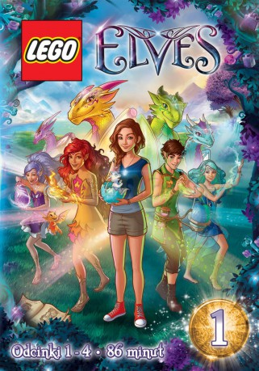

#6563 Lego Elves
 
 IMDB-Wertung: 6.4 / 10
IMDB-Wertung: 6.4 / 10  Metascore: 0
Metascore: 0 
Emily Jones, shortly after the death of her grandmother, receives an amulet that teleports her to the parallel world of Elvendale, where she befriends four young elves associated with the Classical elements, who assist in her quest to return home, and whom she periodically visits thereafter.
Jahr: 2015
Dauer: 23 Minuten
FSK:
Land: Studio: Ja FilmTonspuren:
Untertitel:
Auflösung: SD (720x404) Größe: 210 MB
Genre:
Regisseur: Rune Christensen
Drehbuch: LEGO Group, The
Soundtrack:
Darsteller:
Datei: X:\Kinder Collections\LEGO\Lego Elves (2015, FSK, 720x404).mkv seit 11.07.2017
Festplatte: Kinder-Filme+Trick
 Es gibt insgesamt 34 Filme in der Gruppe 'Kinder Collections\LEGO'
Es gibt insgesamt 34 Filme in der Gruppe 'Kinder Collections\LEGO'